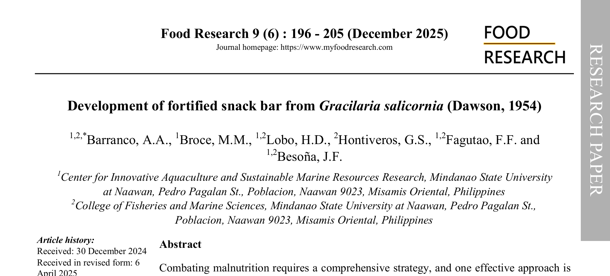
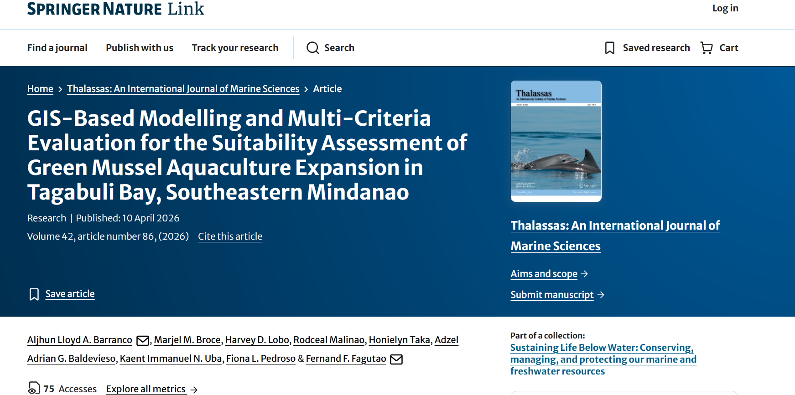
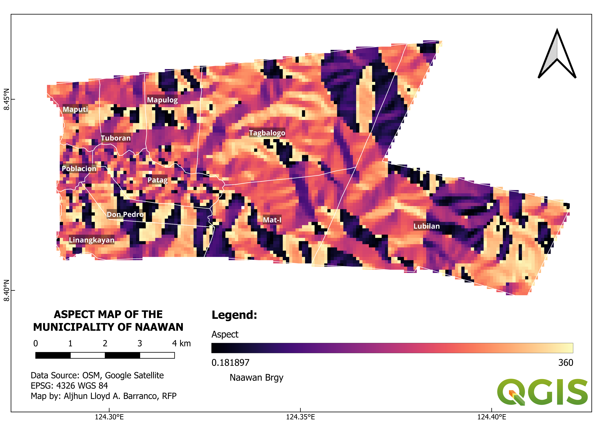
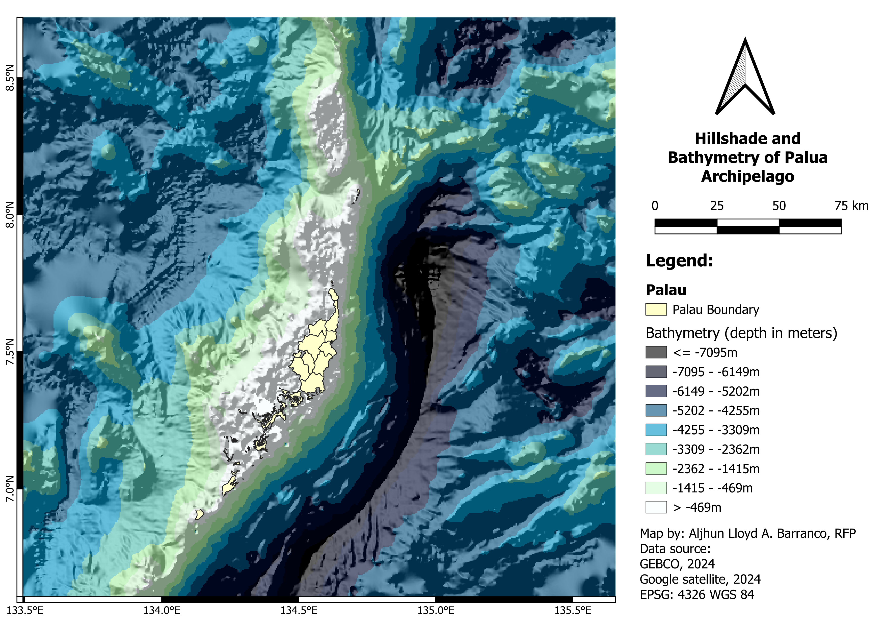
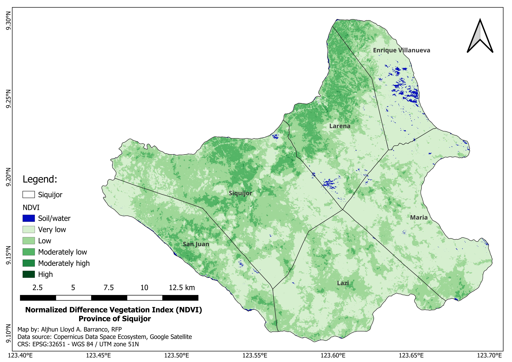
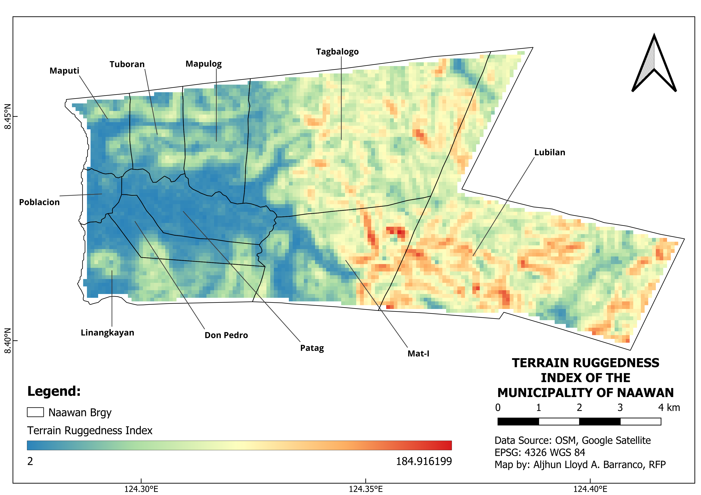
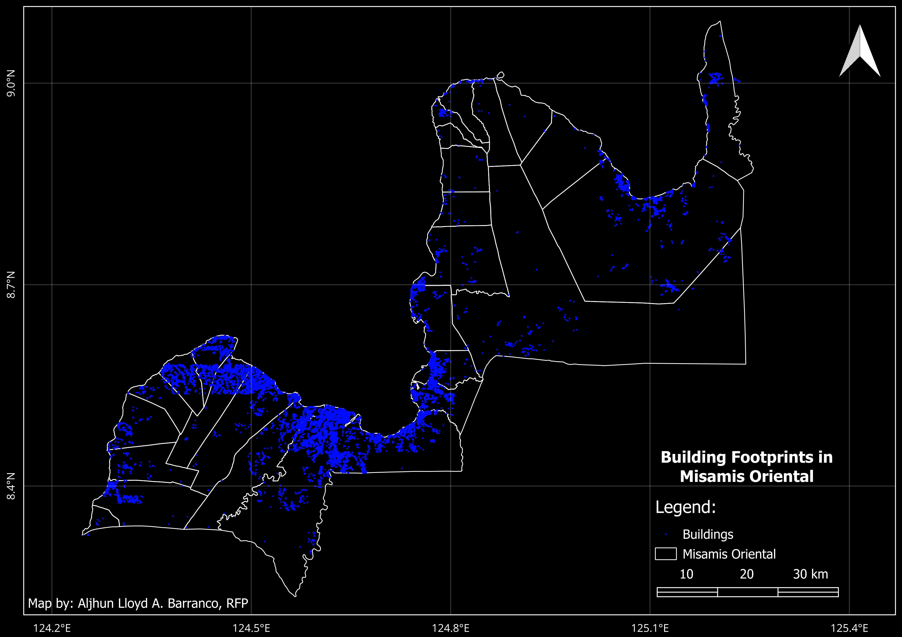
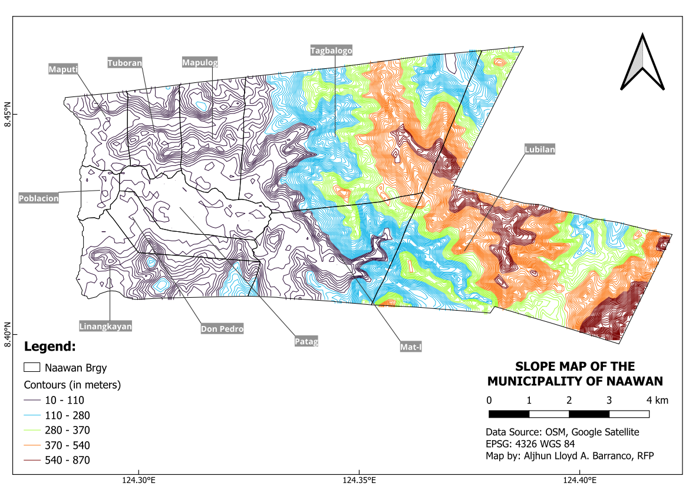

A Registered Fisheries Professional specializing in fisheries science, marine plankton, green mussel farming, and GIS and remote sensing applications. His current research focuses on the biology and ecology of Perna viridis, with emphasis on sustainable mariculture, environmental assessment, and spatial analysis for aquaculture development. He also works on food science, sensory evaluation, and food fortification.
Serving as Project Technical Assistant I at the PernaPRO under iAQUA Research Center in collaboration with DOST-PCAARRD and as Assistant Lecturer in the Department of Fisheries Technology, College of Fisheries and Marine Sciences, MSU at Naawan.
Graduated Magna Cum Laude (CGPA: 1.254) with a Bachelor of Science in Fisheries from Mindanao State University at Naawan. Passed the Fisheries Licensure Examination with an 88.25% overall rating.
Awarded by VLIR-UOS scholarship to pursue a Master's Degree in Marine and Lacustrine Science and Management in Belgium, focusing on advanced marine and lacustrine ecosystem management.
Development of simulation-based IMTA models integrating milkfish culture with extractive species for nutrient mitigation, carrying capacity analysis, and sustainable mariculture planning.
Long-term monitoring of plankton dynamics, including bloom events, diversity indices, multivariate analysis, and spatiotemporal ecological assessment.
GIS-based spatial analysis and monitoring of dissolved oxygen, salinity, temperature, pH, and harmful algal bloom indicators in mariculture-impacted coastal systems.
Biological and ecological analysis of Perna viridis populations, including multivariate statistics, growth relationships, and suitability assessment for aquaculture expansion.


Vrije Universiteit Brussel · Universiteit Antwerpen · Universiteit Ghent
Department of Fisheries Technology · CFMS · MSU Naawan
PernaPRO, iAQUA Research Center · DOST-PCAARRD Collaboration
Mindanao State University at Naawan
Magna Cum Laude





Open to collaborations in fisheries science research, aquaculture systems, GIS applications, remote sensing, mussel biology and ecology, and marine ecology.